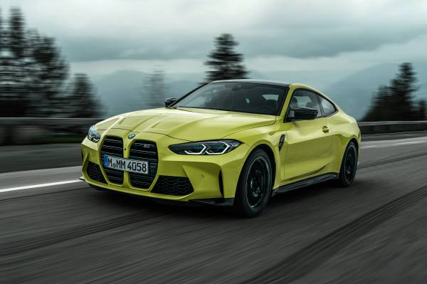
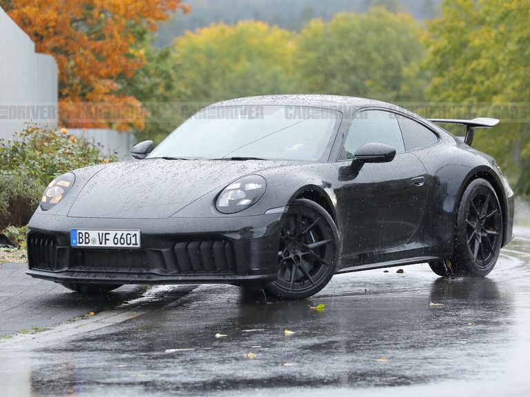

Ford:
Fondată de Henry Ford în 1903, Ford Motor Company este una dintre cele mai mari și mai influente companii auto din lume. De la lansarea revoluționarului Model T în 1908, care a fost prima mașină produsă în masă și care a pus America pe roți, până la legendarul Mustang, care a definit categoria muscle car-urilor, Ford a fost mereu un inovator în industria auto.

Mercedes-Benz:
Mercedes-Benz, cu o istorie ce se întinde pe mai mult de un secol, este cunoscută pentru inovație, lux și performanță. Fondată în 1926, Mercedes-Benz a produs unele dintre cele mai iconice mașini din istorie, de la limuzine de lux precum seria S până la modele sportive precum seria AMG. Compania este renumită pentru standardele sale ridicate de calitate și siguranță.
Ferrari:
Fondată de Enzo Ferrari în 1939, Ferrari este sinonimă cu excelența în cursele auto și cu pasiunea pentru performanță. Cu o istorie bogată în motorsport și tehnologie de vârf, Ferrari a produs unele dintre cele mai dorite și mai iconice mașini sportive din lume. De la legendarul Ferrari 250 GTO la supercarul hibrid LaFerrari, fiecare model Ferrari reprezintă o combinație perfectă între performanță și frumusețe.

BMW:
BMW, sau Bayerische Motoren Werke AG, este o marcă germană renumită pentru mașinile sale de lux și performanță. Fondată în 1916, BMW este cunoscută pentru inovație și design distinctiv. Cu modele precum seria 3, care este un standard în segmentul sedanelor de lux, și seria M, care oferă performanță extremă, BMW continuă să fie unul dintre cei mai importanți jucători din industria auto.
Porsche:
Fondată în 1931 de către Ferdinand Porsche, Porsche AG este cunoscută pentru mașinile sportive de înaltă performanță și pentru designul său distinctiv. De la legendarul Porsche 911, care este considerat unul dintre cele mai iconice și mai iubite modele de mașini sportive din istorie, până la SUV-ul de lux Cayenne, Porsche oferă o gamă diversă de mașini care combină performanța cu eleganța și luxul.
